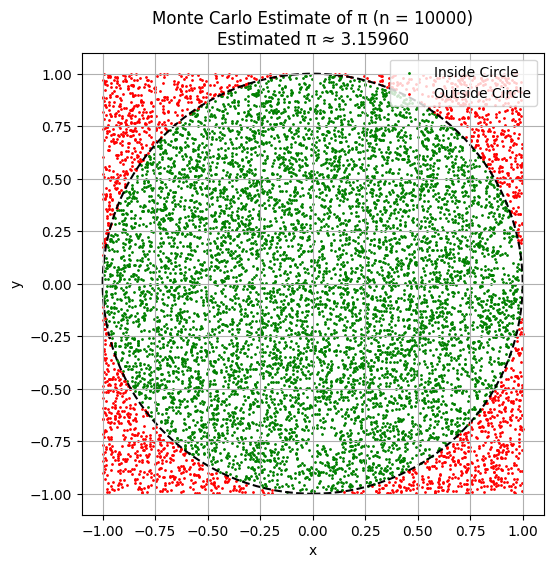
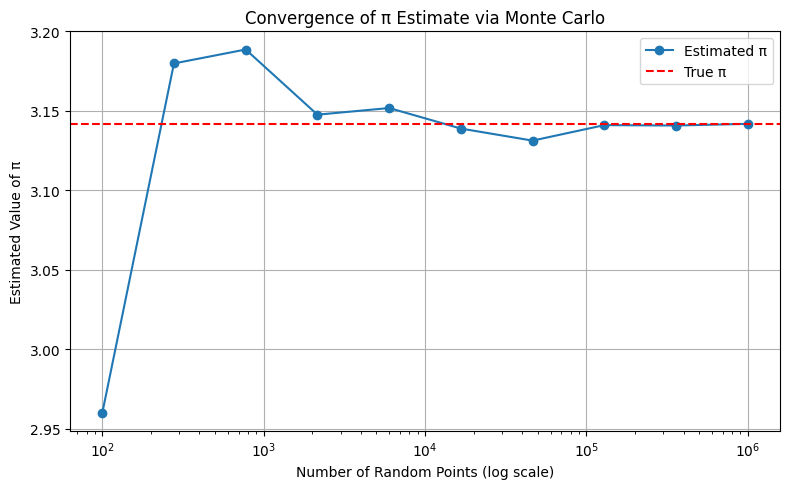
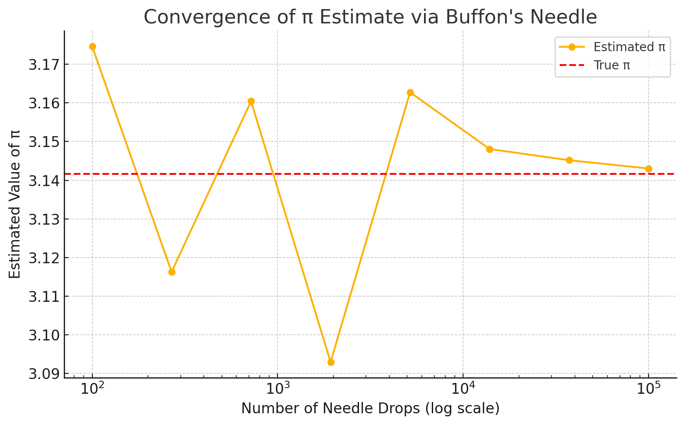

Problem 2
📐 Estimating π Using Monte Carlo Methods
Motivation
Monte Carlo methods are widely used in physics, engineering, and finance to simulate random processes. One of the most intuitive and visually appealing applications of this method is estimating the value of π — the ratio of a circle’s circumference to its diameter.
In this project, we implement and compare two classic methods for estimating π: 1. The geometric circle method (area-based approach). 2. The Buffon's needle experiment (probabilistic geometry).
These methods reveal the power of randomness and how it can be used to derive accurate approximations for fundamental constants.
Part 1: Estimating π with Random Points in a Circle
1. Theoretical Background
We place a unit circle (radius = 1) inside a square of side 2 (from -1 to 1 in both axes). Random points \((x, y)\) are generated within the square. If a point lies within the circle, it satisfies:
Since the area of the square is \(4\) and the area of the unit circle is \(\pi\), the ratio of points falling inside the circle approximates the ratio of the areas:
This provides a simple way to estimate π using only geometry and random numbers.
2. Simulation Process
We simulate \(n\) random points within the square, count how many fall within the circle, and apply the formula above to estimate π.
Python code to simulate \(n\) random points, count how many fall within the unit circle, and estimate π:
```python
import numpy as np
def monte_carlo_pi(n_points=10000): x = np.random.uniform(-1, 1, n_points) y = np.random.uniform(-1, 1, n_points) inside = x2 + y2 <= 1 pi_estimate = 4 * np.sum(inside) / n_points print(f"Estimated π ≈ {pi_estimate:.5f} using {n_points} random points")
return pi_estimate
Example use:
monte_carlo_pi(10000)
```
3. Visualization of Points
To better understand the process, we visualize: - Green points that fall inside the circle. - Red points that fall outside the circle.

This helps illustrate how the method works geometrically and intuitively.
4. Accuracy and Convergence
The law of large numbers tells us that the estimate will converge to the true value of π as the number of points increases.

We observe: - With a small number of points (e.g. 100), the estimate is unstable. - With 10,000+ points, the estimate approaches 3.14 and stabilizes.
Part 2: Estimating π Using Buffon’s Needle
1. Theoretical Background
Buffon's Needle is a classical problem in probability. Imagine a floor with parallel lines spaced distance \(d\) apart. A needle of length \(L \leq d\) is dropped randomly. The probability that the needle crosses a line is given by:
Where: - \(N\) = total needle drops - \(H\) = number of crossings (hits) - \(L\) = needle length - \(d\) = line spacing
This method connects geometry, probability, and estimation in a surprising and elegant way.
2. Simulation Process
We simulate random needle drops: - Randomize the needle center's position between two lines - Randomize the angle - Check if the needle crosses a line
import numpy as np
def buffon_needle_simulation(n_needles=10000, L=1.0, d=1.0):
"""
Simulates Buffon's Needle experiment.
Parameters:
n_needles (int): Number of needle drops.
L (float): Length of the needle.
d (float): Distance between parallel lines (must be >= L for the formula to hold).
Returns:
Estimated value of π.
"""
if L > d:
raise ValueError("Needle length must be less than or equal to the distance between lines.")
hits = 0
for _ in range(n_needles):
x = np.random.uniform(0, d / 2) # Distance from center to nearest line
theta = np.random.uniform(0, np.pi / 2) # Angle with respect to the lines
if x <= (L / 2) * np.sin(theta):
hits += 1
if hits == 0:
return float('inf') # Avoid division by zero
pi_estimate = (2 * L * n_needles) / (d * hits)
print(f"Estimated π ≈ {pi_estimate:.5f} from {n_needles} needle drops")
return pi_estimate
# Example usage:
buffon_needle_simulation(n_needles=10000)
3. Visualization of Needle Drops
To illustrate: - Blue needles cross a line. - Gray needles do not cross.
Parallel lines are shown as vertical dashed lines.
📌 Insert Here: Plot showing needle drops and line crossings. Title includes total drops, hits, and estimated π.
This makes the geometric probability visible and understandable.
4. Convergence and Comparison
As the number of needle drops increases, the estimate of π improves, although more slowly than with the circle method.

Colablink
We compare: - Convergence rate - Variance in estimates - Sensitivity to sample size
📊 Summary Table
| Method | Estimate Formula | Speed of Convergence | Accuracy (n=10,000) | Notes |
|---|---|---|---|---|
| Circle Method | \(π ≈ 4 \cdot \frac{M}{N}\) | Faster | ±0.01–0.03 | Simple, visual, low variance |
| Buffon's Needle | \(π ≈ \frac{2L \cdot N}{d \cdot H}\) | Slower | ±0.05–0.1 | Historical, higher variability |
Where: - \(M\) = number of points inside the circle - \(N\) = total number of points - \(H\) = number of hits (needle crosses a line)
✅ Conclusion
This project demonstrates the power and versatility of Monte Carlo methods:
- The Circle Method provides a fast and visual estimation of π with good accuracy and simple implementation.
- Buffon’s Needle offers a beautiful probabilistic approach rooted in classical mathematics but converges more slowly and shows more variation.
Both highlight how randomness, geometry, and probability come together in computational simulations. These experiments build a deeper understanding of convergence, estimation, and the connection between mathematics and real-world simulation.